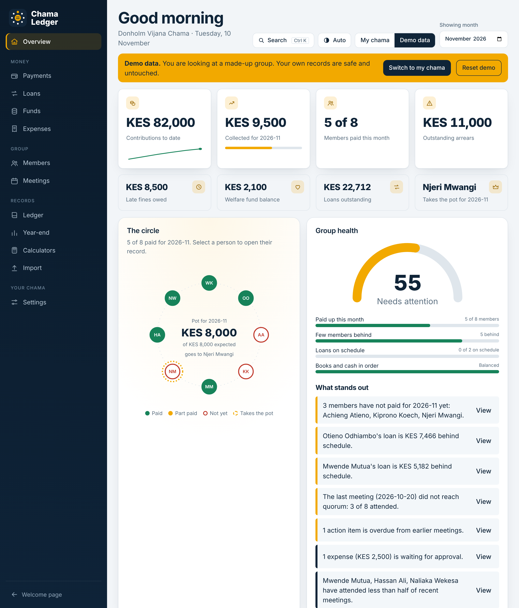
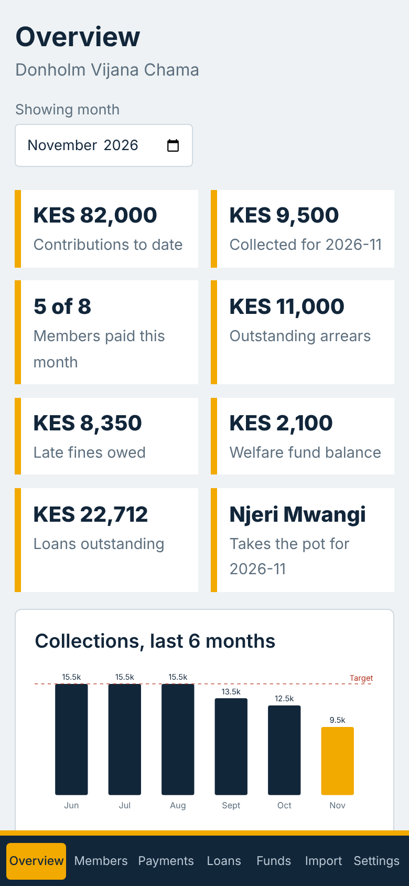
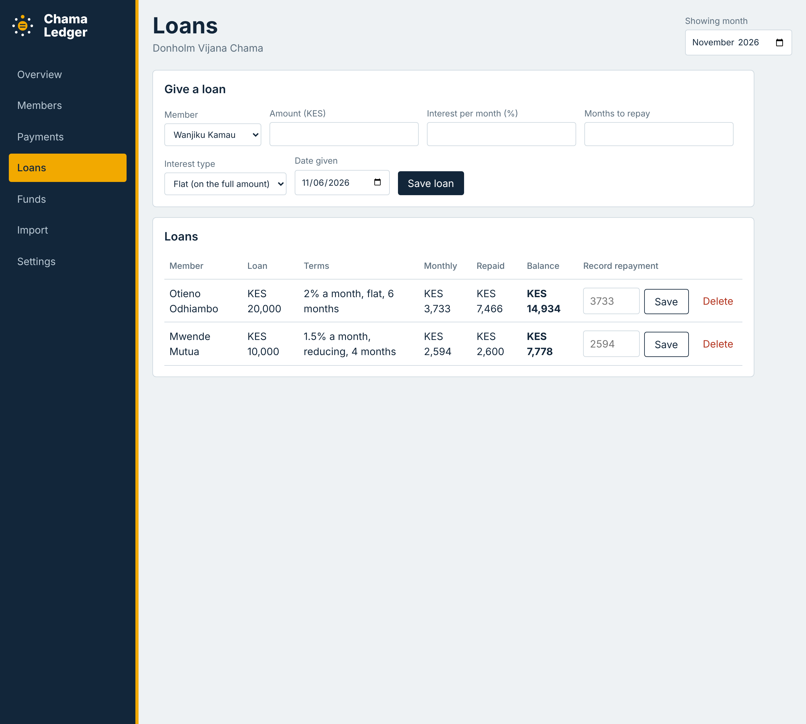
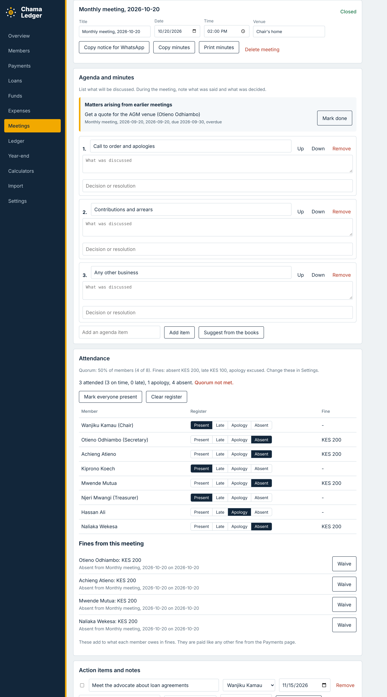
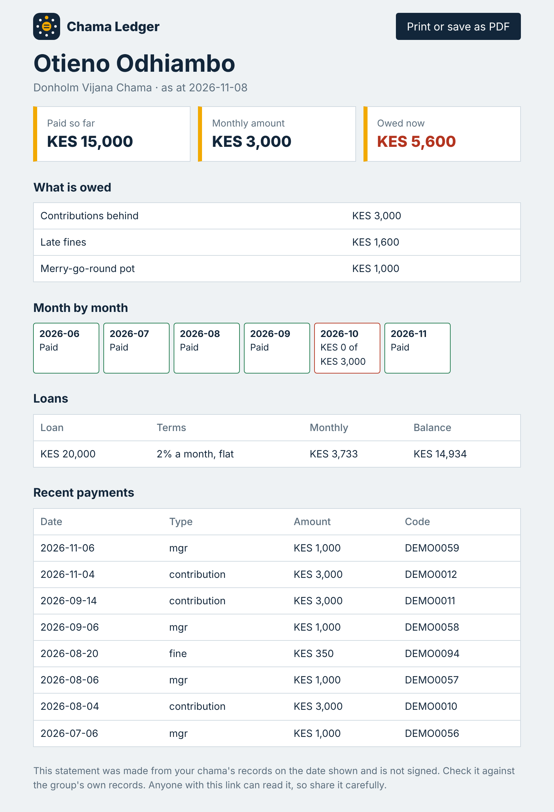
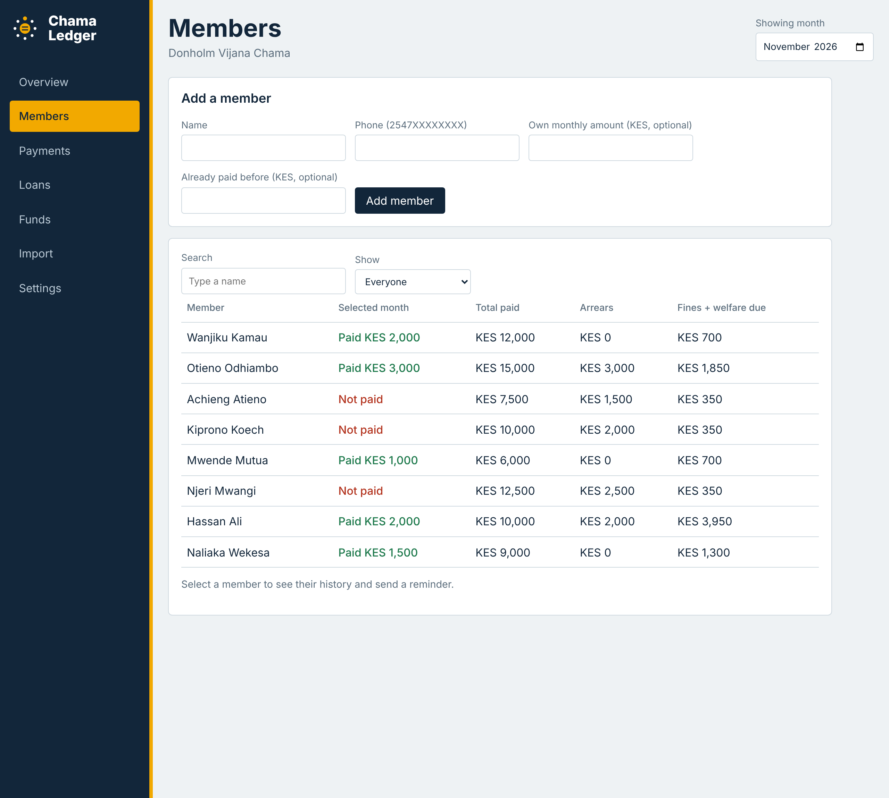
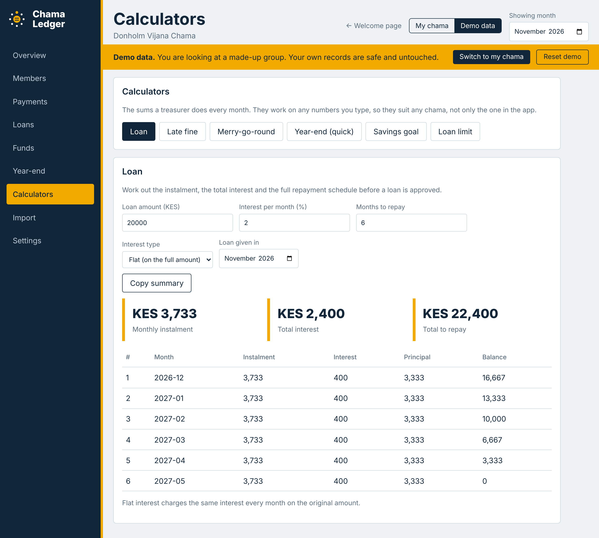
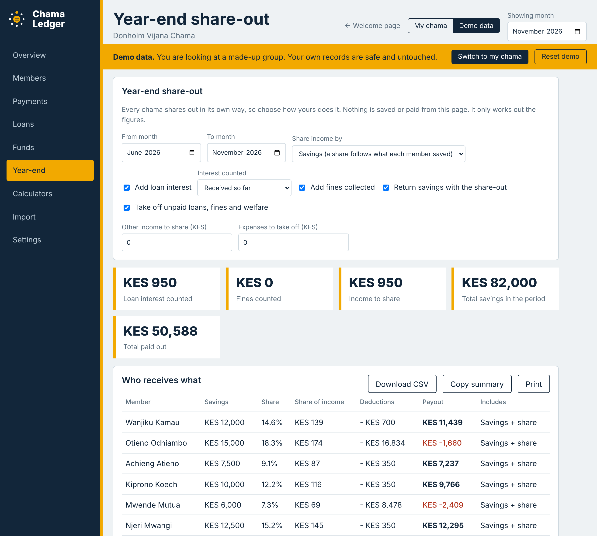
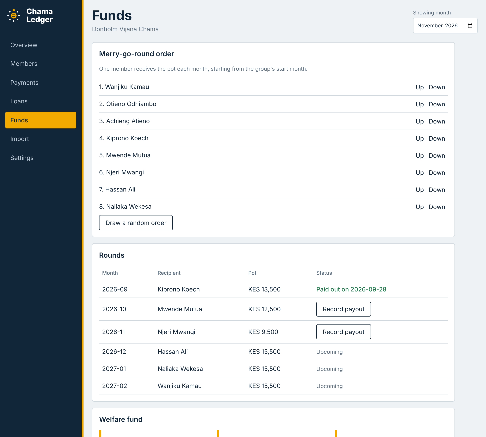

Ledger books
One copy in one person's handwriting. If the book is lost, or the treasurer leaves, the history goes with it.
Chama Ledger replaces the notebook, the WhatsApp scroll and the Word file with a record the whole group can check. Built for Kenyan chamas, from monthly contributions and late fines to loans and the merry-go-round.
Free to try. Nothing to install. Your data stays on your device.

Chamas move a lot of money every month, but most keep their records in a ledger book, a WhatsApp group or a Word document. Each one fails in its own way.
One copy in one person's handwriting. If the book is lost, or the treasurer leaves, the history goes with it.
Payments scroll away. M-Pesa codes get buried, and nobody can say quickly who paid what, for which month.
Tables are retyped and passed around until several versions disagree about who is up to date.
On top of that, the treasurer works out fines, loan interest and whose turn it is by hand. That is where disputes start.
It follows the rules chamas already use. Those rules differ from group to group, so almost everything is a setting.
Name, monthly amount, start month, due day, fines and welfare. Add your members, each with their own amount if needed.
Paste your WhatsApp payments or your Word table, or enter a balance brought forward, so you don't start from zero.
Record payments as they come. The dashboard shows who has paid, who is behind and who takes the pot, and a reminder is one tap away.

Spend less time with a calculator and more time on the group. Every figure can be traced to a payment.
See the whole picture in one place: contributions, arrears, loans, welfare and the next round.
A clear record to point to when there is a question. Member access from their own phones is coming with logins.
Here is what changes in the everyday life of a chama.
| In your chama | Today | With Chama Ledger |
|---|---|---|
| Who has paid? | Flip through pages or scroll the chat | Open the member and see every payment with its M-Pesa code |
| Late fines | Worked out by hand, then argued about | Calculated from the rule your chama chose |
| Loans | Interest kept in someone's head or a margin note | Instalment, repayments and balance shown for each loan |
| Whose turn is it? | Ask the chair, check the list | The next recipient and the size of the pot are on the dashboard |
| Chasing members | Type every message yourself | One tap opens WhatsApp with the message ready |
| A new treasurer | The book changes hands, or goes missing | The record stays, and a CSV backup is one click away |
Members, loans, calculators, rounds and the year-end share-out in one place. These screens show demo data.







There are good chama platforms in Kenya, and some do things Chama Ledger does not yet. Here is an honest picture. Sources are in the project's competitor research.
| What matters | Notebook, WhatsApp, Excel | Full chama platforms | Chama Ledger |
|---|---|---|---|
| Needs an account or sign-up | No | Usually yes | No |
| Works offline | A notebook does; chats do not | Usually needs a connection | Yes, and installs on a phone |
| Where the data is kept | On paper, in a chat app or on one laptop | On the provider's servers | On your own device |
| Fits your chama's own rules | By hand | A set of standard options | Policy templates and settings for pot, approvals and share-out |
| Brings in your old records | Not applicable | Usually re-enter them | Paste WhatsApp messages or a Word or Excel table |
| Explains and proves every figure | Hard to do | Statements and reports | Step-by-step explanations and a searchable balanced ledger |
| Collects M-Pesa automatically | No | Many do | Not yet. You record payments; STK push is planned |
| Sends messages | You type each one | Many send SMS | WhatsApp messages ready to send in one tap |
| Member logins | No | Yes | Not yet. Members get a statement link |
| Cost | Free | Free tiers and per-member plans | Free to try |
No. It runs in the browser on a phone or a computer. If you like, you can add it to your phone's home screen and it will keep working with no internet.
Those platforms are strong at collecting M-Pesa payments, sending SMS and giving each member a login, and they hold your data on their servers. Chama Ledger works the other way round for now: it needs no account, works offline, keeps data on your device, adapts to your chama's own rules, imports your old WhatsApp and Word records, and explains every figure. Payment collection and logins are on the roadmap.
Yes. Switch to the demo data at any time. It is a made-up group kept separate from your records, so nothing of yours is touched, and you can switch back with one click.
On your own device, in your browser. Nothing is sent to a server. Download the payments as a CSV from Settings to keep a backup.
Yes. Paste a table from Word or Excel, or payment messages from WhatsApp, and check the preview before anything is saved.
Contribution amounts, fines, welfare, loan interest and the merry-go-round are all settings, because chamas differ. If yours does something different, tell us.
You record each M-Pesa payment with its code, or paste your M-Pesa and WhatsApp messages and let the app find the payments. Paying through the app with STK push is planned.
Not yet. Today one device keeps the record, and approvals are entered by choosing who approved, with a WhatsApp message to ask them. A shared version with logins, where each official approves from their own phone, is planned.
Load the demo group, look around, then enter your own.
Are you a treasurer or member of a chama? Tell us how your group keeps its records and what rules it uses. Share feedback